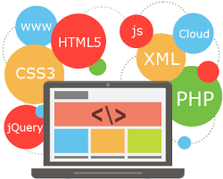

Who I Am
 I am passionate about technology, creativity, and problem-solving. My background includes experience in cybersecurity, programming, and web development.
I am passionate about technology, creativity, and problem-solving. My background includes experience in cybersecurity, programming, and web development.
 I enjoy learning new skills, taking on challenges, and collaborating on projects that push the boundaries of innovation. I also have an interest in mentoring and helping others understand technology, which is why I share some of my experiences here.